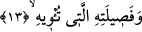
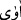
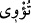
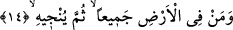

12. Karısını, kardeşini,
“Eşini” yâni beraber olduğu hanımını, “kardeşini” yâni kendisine yardımcı olan ve
arka çıkan kardeşini... Bu cümle isti’nâfiye cümlesidir. Cümle her günahkârın o gün
kendi canıyla meşgul olacağını ifâde etmek için getirilmiştir ve her günahkârın kendi
başının derdine düşme noktasında işi; en yakın akrabasını, kalbiyle kendilerine en çok
bağlı olduğu âile üyelerini fedâ etme noktasına vardıracağını beyân etmek için
getirilmiştir. Artık bu kişi o kadar sıkışmıştır ki, -en yakın akrabalarıyla meşgul olmak
ve onların durumlarını sormak bir yana- başına gelecek azaptan kurtulmak için onları
fedâ bile edebilmektedir. Burada sanki şöyle bir soru sorulmaktadır: Mâdem ki insanlar
kendi akrabalarının hâllerini ve durumlarını sorabilmek imkânı içindedirler, o hâlde
neden sormazlar? İşte bu soruya şöyle cevap verilmiş oluyor: O günün azâbından
kurtulmak için o oğullarını, eşini, kardeşini, kendisini koruyup barındıran soyunu,
sopunu... hepsini fedâ etmeyi ister.
13. Kendisini koruyup barındıran tüm âilesini
Soyunu, sopunu. Burada kullanılan “fasîle” kelimesi, aslında insanın cesedinden
ayrılan bir parça et anlamınadır. Yakın ana-babalara ve evladlara “fasîle” denmesi,
çocuğun anne-babadan kopan bir parça mesâbesinde olmasından dolayıdır. Çocuk
ebeveynden ayrılan bir parça olunca, ebeveyn de çocuktan ayrılmış iki parça olurlar.
İşte bu bakış açısı nedeniyle soy-sopa, “fasile” denmiştir. Âyet-i kerîmede yer alan
“fasile” kelimesinden maksad, insanın yakın baba ve ecdâdı ile kendisine en yakın
aşîretidir.
“Îvâ” kelimesi kök olarak “birisine katılmak ve başkasına sığınmak” mânâsınadır.
Nitekim Kur’ân-ı Kerîm’de bir başka yerde aynı kelime bu anlama kullanılmaktadır:
“Yusuf’un yanına girdiklerinde öz kardeşini yanına aldı.” (Yusuf, 12/69) İşte bu
âyet-i kerîmede de “
/âvâ” fiili, “kardeşini kendi nefsine kattı, zammetti” mânâsına
gelir. Tefsirini yaptığımız bu âyet-i kerîmede yer alan “
/tu’vî” kelimesi ise “kişinin
neseb yönünden soyu sopu ya da şiddet ve sıkıntı esnâsında kendilerine sığındığı soyu,
sopu” mânâsınadır. Farsça ifâdesiyle: “Dünyada ona kendi nezdinde yer veren, yâni
onun sığınağı olan kendi âilesini (akrabası)…” demektir.
14. Ve yeryüzünde kim varsa hepsini fidye olarak versin de, tek kendini